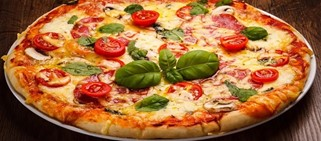
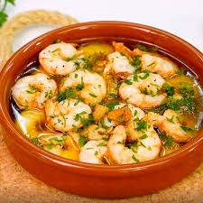
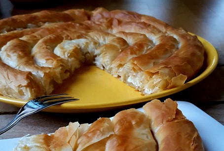
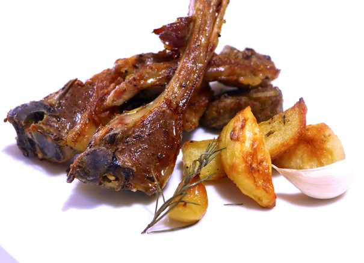
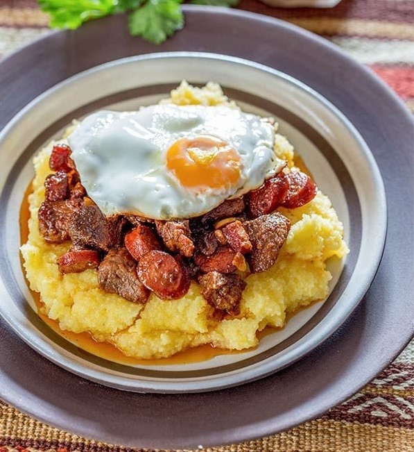

De beste gerechten van Europa!
Pizza (Italië)
-
De pizza die we nu allemaal kennen, gemaakt van tomatensaus, kaas en tal van toppings, is ontstaan in Italië. Hij werd populair in Napels in de 18e eeuw als een goedkoop, voedzaam gerecht dat vooral door boeren werd gegeten. De moderne pizza zoals wij die nu kennen, is voortgekomen uit de vroege Napolitaanse platte broden die werden belegd met reuzel, zout en knoflook.
- 
Gambas al ajillo (Spanje)
-
Gambas al ajillo is een populair Spaans voorgerecht bestaande uit garnalen die in een pan worden gebakken met gehakte knoflook, citroensap, paprikapoeder en olijfolie. Het gerecht wordt meestal gegeten als een tapa. Het wordt aanbevolen om gambas al ajillo te garneren met gehakte peterselie en het te combineren met knapperig brood, dat handig is om de smaakvolle saus op te dweilen.
- 
Banista met kaas (Bulgarije)
-
De Bulgaarse pastei banitsa met kaas is de belangrijkste versie van deze traditionele pastei. Hij wordt gemaakt door beboterde bladen fyllodeeg te bedekken met een combinatie van eieren, yoghurt en kaas, zoals sirene en feta. Er is een facultatief ingrediënt bij de bereiding van banitsa en dat is zuiveringszout, dat de yoghurt doet rijzen en de pastei luchtiger en rijker van smaak maakt.
- 
Païdakia (Griekenland)
-
Gegrilde lamskoteletjes zijn een traditioneel Grieks gerecht dat in het hele land populair is en meestal als hoofdgerecht wordt gegeten. Lamskoteletjes worden gewoonlijk gemarineerd in verschillende combinaties van olijfolie, citroensap en een verscheidenheid aan verse kruiden voordat ze worden gegrild op traditionele houtskoolbarbecues. Ze worden meestal gecombineerd met aardappelen, salades of de romige en verfrissende tzatziki saus.
- 
Tochitură Moldovenească (Roemenië)
-
Tochitură Moldovenească is een traditionele Roemeense en Moldavische stoofpot die zijn oorsprong vindt in de historische regio Moldavië, een gebied dat nu wordt gedeeld door Roemenië en de Republiek Moldavië. De stoofpot wordt gemaakt door varkensvlees, worst-jes en spek samen met uien, knoflook, kruiden, witte wijn, en soms tomatensaus en varkensvlees te stoven. Het gerecht gaat meestal vergezeld van romige polenta, geraspte kaas en gebakken eieren. Paprika en ingemaakte groenten worden er soms bij geserveerd. Er zijn talrijke variaties op het gerecht, zo is het niet ongewoon om tochitură gekookt te zien met worstjes en champignonsaus in plaats van stukjes vlees.
- 